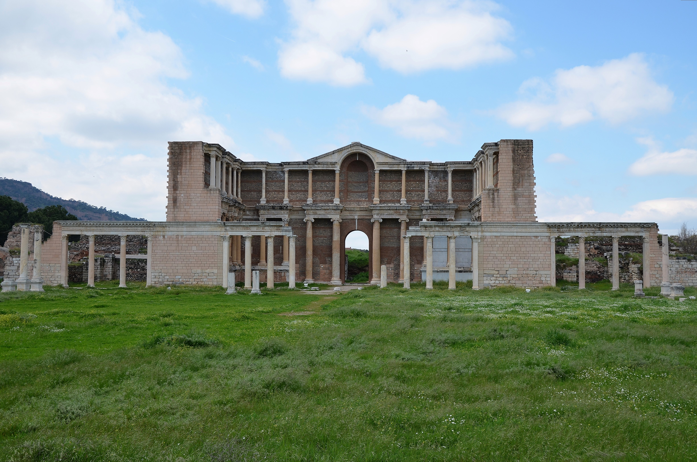

Sardis

- Find Name
- Sardis
- Description
- The ancient capital of Lydia in western Asia Minor, at modern Sart in the Hermus Valley below Mount Tmolus, famed under Croesus for its wealth — the proverb 'rich as Croesus' — and for the earliest coinage, refined in its Lydian gold workshops from electrum into pure gold and silver. After falling to Persia in the mid-6th century BC it became the capital of the Persian satrapy of Lydia and the western terminus of the Royal Road. Excavations since 1910, and continuously since 1958 under Harvard and Cornell, have uncovered the massive Temple of Artemis, two of whose columns still stand to full height, a great Roman bath-gymnasium complex, and, within it, the largest ancient synagogue yet found outside the land of Israel, seating perhaps a thousand, its donor inscriptions showing a prosperous Jewish community integrated into civic life.
- Historical Period
- Lydian to Byzantine, 8th century BC to 14th century AD
- Evidence Class
- Direct
- Interpretations
- Scholars agree Sart is biblical Sardis; the name has been continuous for over 3,000 years. The synagogue is later than the New Testament (late antique in its surviving form), so it evidences the Jewish presence around the church rather than the church's own first-century building, and is stated as such. No first-century church building at Sardis has been identified.
- Alternative Names
- Sardes; Sparda (Old Persian); Sart
- Related Places
- Related Books
- Related People
- Scripture Illuminated
- Biblical Significance
- Sardis is one of the seven churches of Revelation: John is told to write to the angel of the church in Sardis, 'I know thy works, that thou hast a name that thou livest, and art dead' (Revelation 3:1), and to call its few undefiled faithful to hold fast and be clothed in white (Revelation 3:4-5). The excavated city explains the letter's imagery from the ground: a wealthy, complacent city living on a great reputation, with a strong Jewish community beside the young church, and a small fourth-century church building found at the Temple of Artemis showing the name was not, in the end, blotted out.
- Artifact Date
- Lydian capital from the 8th century BC; Temple of Artemis, Hellenistic-Roman; bath-gymnasium and synagogue, Roman to late antique
- Current Location
- In situ, Turkey (UNESCO World Heritage Site, 2025)
- Date Discovered
- 1910-1914 (Howard Crosby Butler, Princeton); Harvard-Cornell expedition from 1958 (George M. A. Hanfmann)
- Discovery Location
- Sart, Manisa Province, western Turkey, in the Hermus Valley
- Timeline Era
- Early Church
Awaiting Review Not yet checked against scholarly sources. Treat its claims as provisional until this entry is reviewed. About verification
Last reviewed: not yet reviewed